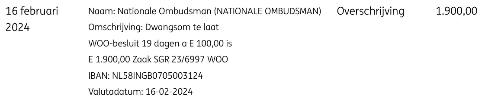

Exhibit · Bank statement
ING bank statement, penalty payment by the National Ombudsman, 16 February 2024
The passage
“16 February 2024 · Name: Nationale Ombudsman (NATIONALE OMBUDSMAN) · Description: Penalty payment for delay, Woo decision, 19 days at E 100.00 is E 1,900.00, case SGR 23/6997 WOO · IBAN: NL58INGB0705003124 · Value date: 16-02-2024 · Transfer · 1,900.00” The single transaction line on page 1 of the statement, with the values from the columns Datum, Omschrijving, Type and Bedrag. Translated from the Dutch; the original wording is below. The middle dots separate the columns and the fields Naam, Omschrijving, IBAN and Valutadatum; lines that wrap within them have been joined.
Original wording
“16 februari 2024 · Naam: Nationale Ombudsman (NATIONALE OMBUDSMAN) · Omschrijving: Dwangsom te laat WOO-besluit 19 dagen a E 100,00 is E 1.900,00 Zaak SGR 23/6997 WOO · IBAN: NL58INGB0705003124 · Valutadatum: 16-02-2024 · Overschrijving · 1.900,00” The statement writes the euro sign as a capital E and follows the Dutch convention of a full stop for thousands and a comma for decimals, so ‘E 1.900,00’ is €1,900.00. ‘Dwangsom’ is the penalty payment for delay and ‘WOO’ is the Dutch Open Government Act, the Wet open overheid.

Why this document matters
The District Court of The Hague had ruled in July 2023 that the National Ombudsman had unlawfully declined to deal with an information request from Giltay, and in December 2023, on a later request that the institution had failed to decide on in time, attached a penalty payment to every day of further delay. This statement shows the moment at which that judgment became money. On 16 February 2024 the institution transferred €1,900 to Giltay. According to the description the Ombudsman entered on the transfer, it was a penalty payment for a late Woo decision, 19 days at €100, in case SGR 23/6997.
The essay states that the calculation behind this figure was wrong and that the National Ombudsman corrected it only in June 2026, so that the supplementary payment followed 28 months later. With the sums awarded by the court, including the €1,900 on this statement, Giltay replenished the reserve from which he had paid for the translation, and paid for the trip to Tallinn, the stay there and the printed copies of the English edition.
Provenance
- Document
- Bank statement, ‘Details af- en bijschrijving’ (details of debit and credit entries), one transaction line
- Issued by
- ING Bank
- Account holder
- E.F. Giltay
- Payment from
- Nationale Ombudsman (National Ombudsman of the Netherlands), IBAN NL58INGB0705003124
- Amount
- €1,900.00, credited as a transfer (overschrijving)
- Date
- 16 February 2024, value date 16 February 2024
- Case number
- SGR 23/6997 WOO, as stated on the transfer
- References
- Judgment of the District Court of The Hague of 27 December 2023 in case SGR 23/6997 (ECLI:NL:RBDHA:2023:20409), which ordered the National Ombudsman to decide within two weeks and set a penalty payment of €100 for each day of delay, up to €15,000. The statement gives the case number only, not the court or the ECLI.
- Footer
- ‘Aan de inhoud van dit document kunnen geen rechten worden ontleend’ (no rights may be derived from the content of this document)
- Language
- Dutch
- Pages
- 1
- Held by
- Author’s archive
- See also
- District Court of The Hague, judgment of 18 July 2023 (ECLI:NL:RBDHA:2023:17841)National Ombudsman to Giltay, 28 February 2024Supplementary penalty payment by the National Ombudsman, 26 June 2026
Cited in:
- the essay ‘The Ban Fell, the Book Stood’ in the chapters (3) ‘What the Book Reveals: Srebrenica Cover-up’ and (9) ‘Preserved Forever’
- the Voices section.
Document: https://
Last modified 27 June 2026, accessed 9 October 2026.

This page is an exhibit to the book The Cover-up General by Edwin Giltay and its accompanying website.